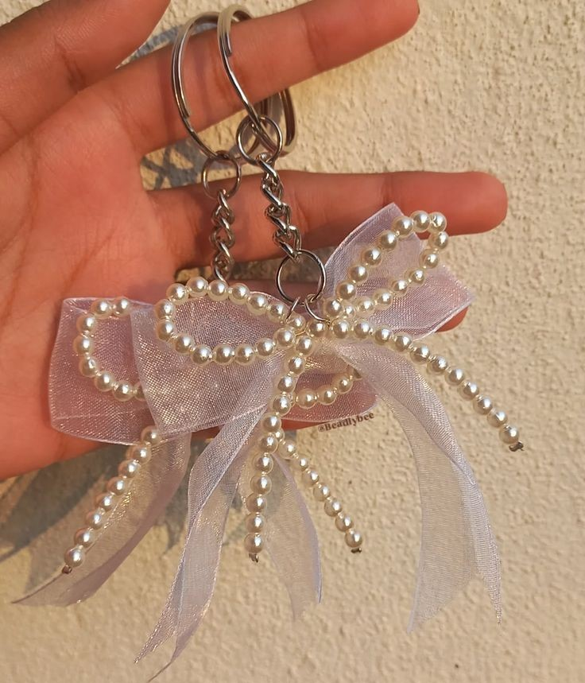
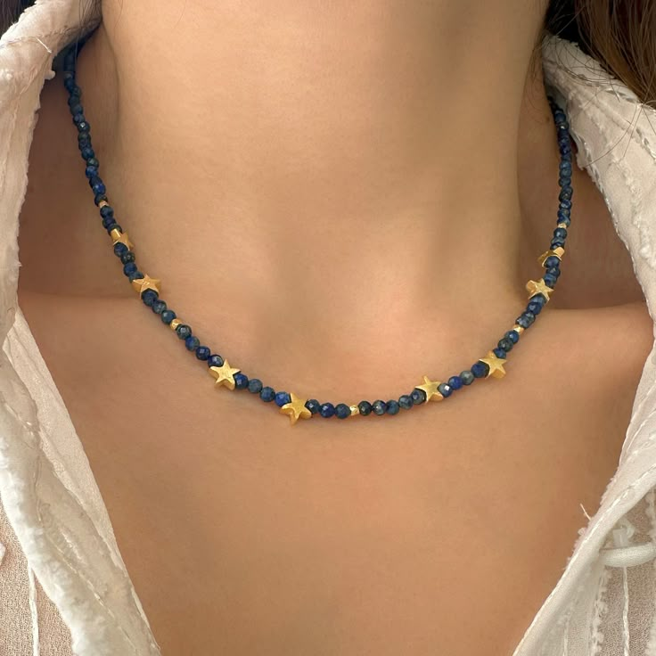
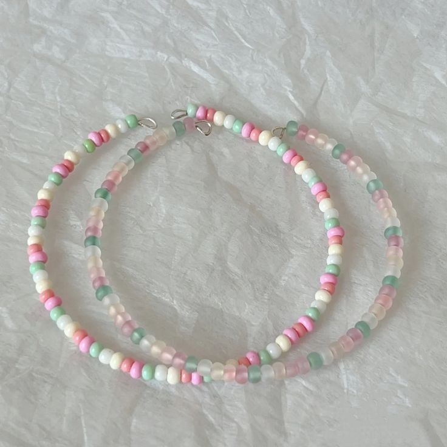

Malzemeler:
• Farklı renklerde boncuklar
• Anahtarlık halkası
• İnce ip veya tel
• Makas
• Boncuk tutkalı (isteğe bağlı)
Adımlar:
1- Anahtarlık için renkli ve ilginç şekillerde boncuklar seçin.
2- İp veya telin bir ucunu anahtarlık halkasına geçirin ve bağlayın.
3- Boncukları ipe veya tele geçirecek şekilde dizin. İsterseniz desen oluşturabilir veya rastgele bir düzen kullanabilirsiniz.
4- Boncukları dizdikten sonra, ipin uçlarını sıkıca bağlayın. Anahtarlık halkasının kaymaması için düğüm attığınız yere biraz boncuk tutkalı sürebilirsiniz.
5- Son olarak, anahtarlık halkasını ipi bağladığınız yere sıkıca sabitleyin.

Malzemeler:
• Boncuklar (istediğiniz renk ve şekillerde olabilir)
• Kolye ipi veya ince bir tel
• Kolye ucu aparatı (isteğe bağlı)
• Makas
• İğne (boncukları dizmek için)
• Boncuk tutkalı (isteğe bağlı)
• Kilit aparatları (kolye ucu, halka ve klips)
Adımlar:
1- İstediğiniz renklerde boncuklar seçin. Renkleri ve şekilleri birleştirerek ilginç bir desen oluşturabilirsiniz.
2- Kolye ipini veya ince teli istediğiniz uzunlukta kesin. Uzunluğu boynunuza göre ayarlayın.
3- Boncukları, iğne yardımıyla sırayla ipe dizin. Boncukları düzenli bir şekilde dizmek, kolyenizin daha estetik görünmesini sağlar.
4- Boncuklar dizildikten sonra, ipin uçlarını bağlayın ve kolye ucu aparatı ile sabitleyin.
5- Son olarak, kolyenin uçlarına kilit aparatlarını takın. Böylece kolyeniz hazır olacak.

Malzemeler:
• Boncuklar (farklı renk ve boyutlarda)
• Elastik bileklik ipi
• Boncuk iğnesi (isteğe bağlı)
• Makas
Adımlar:
1- Farklı renk ve boyutlarda boncukları seçin. İstediğiniz deseni oluşturacak şekilde boncukları bir araya getirin.
2- Elastik bileklik ipini bileğinizin çevresine göre biraz daha uzun kesin.
3- Boncukları, ipi geçirerek sırasıyla dizin. Bilezik tasarımınıza karar verirken renk uyumuna dikkat edebilirsiniz.
4- Boncuklar dizildikten sonra, ipin uçlarını bağlayın. Uçları sıkıca bağlamak için birkaç düğüm atabilirsiniz.
5- Düğümü gizlemek için uçları kesebilir ve boncuklarla örtülebilecek şekilde düzenleyebilirsiniz.